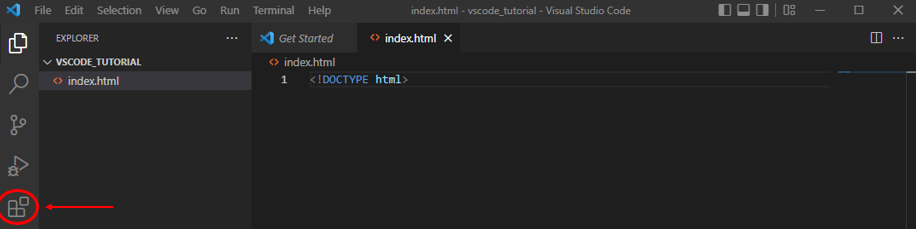
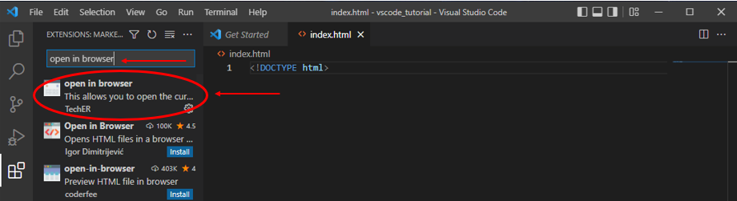
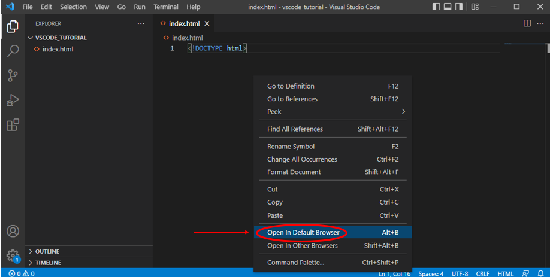

HTML is the foundation of a webpage, containing all content you wish to display (including text, videos, and images). In this tutorial, you will write a basic HTML page to explore some common static elements of a webpage. The included video will walk you through the necessary steps. If you'd prefer not to watch a video, we've included instructions and screenshots below that provide the same information.
Good luck, and have fun!
Step 1A
Open the HTML file created in the VS Code intro video, or another empty one you’d like to work on:
Step 1B
In the first line, type the following: <!DOCTYPE html>This tells your computer that this file type is html, so it knows how to read it. You’ll notice a white circle next to the file name – this means that your work is not saved. To save, use the keyboard shortcut Control S (Windows) or Command S (Mac). You can also save by clicking “File” on the top left, then clicking “Save”.
Step 2A
Before we start creating the webpage, we need a way to see the changes we make. Click the icon on the left side of VSCode labelled “Extensions”:

Step 2B
In the search bar, type “open in browser”. This will pop up a list of extensions, but the one you need will be titled “open in browser”. Click on it:

Step 2C
You will see a button to install the extension (the screenshot is taken on a computer that already has the extension installed – you should see “install” as an option.) Click install:
Step 2D
Now, navigate back to your index.html file. Right click anywhere in the file, and you should see a popup that contains the option: “Open in Default Browser”. If you don’t see this, don’t worry! Try quitting VSCode and opening it up again – the option should be there when you right click in the index file. Click “Open in Default Browser”:

Step 2E
You will see a new window/tab pop up in your default browser. Don’t worry – it’s supposed to be empty right now! Now, return to your index.html file for the next instructions for adding to your page:
Step 3A
Next you will create your first tags, which are like nested containers that can hold and subdivide content in the page.
Tags typically come in pairs, an opening tag marked by <> and a closing tag marked by</>
The nesting on containers represents containment or hierarchy, similar to a family tree. A less indented tag has children indented within it, and tags that share the same level of indentation are considered siblings.
The first tag is html, which will contain the entire file. Type <html lang="en"></html> You can press enter between the two tags.
Step 3B
Your next two tags should be indented inside of the html tags.
Type the following: <head></head> Press enter, and then type: <body></body>
Step 3C
The head tag will hold metadata, such as tab title. Indented between the two head tags, type the following: <title>My first HTML</title>. This will make the tab where your website opens display “My first HTML”. You can change the text between the title tags as you like, but make sure not to change the actual tags!
Step 3D
When you refresh the open page, you should see that the tab name has changed according to what you input in the title tag.
Step 4A
Next, we will write the actual content of the webpage, which should be indented between the body tags. The first content we will create is a header tag, which will show up big and bold by default.
Between the body tags, type the following:<h1>Hello World!</h1> This will be the first line of text that is displayed on the webpage.
Step 4B
When you refresh the open page, you should see the content in the header tag appear:
Step 5A
On the next line, but at the same level of indentation, type the following: <p>This is my first HTML page</p>. This is a paragraph element, which will display as smaller, unbolded text. Below this we can add a sibling paragraph, on the same level of indentation. Type the following: <p>It’s amazing!</p>
Step 5B
Refresh your open window once more to see the final product. Congrats – you’ve made your first web page! In the next tutorials, we will move beyond static content and default settings, using CSS to customize the appearance of the page and JavaScript to create user interactions with the page.